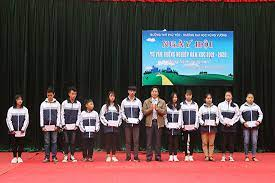

HOAT DONG - SU KIEN
 Cải cách hành chính là một trong những nhiệm vụ quan trọng được trường THPT Phù Yên chú trọng thực hiện trong quá trình thực hiện đổi mới căn bản, toàn diện giáo dục và đào tạo, góp phần nâng cao hiệu quả quản lý, điều hành, chất lượng giáo dục của đơn vị.
Cải cách hành chính là một trong những nhiệm vụ quan trọng được trường THPT Phù Yên chú trọng thực hiện trong quá trình thực hiện đổi mới căn bản, toàn diện giáo dục và đào tạo, góp phần nâng cao hiệu quả quản lý, điều hành, chất lượng giáo dục của đơn vị.
 Thông báo tiếp nhận hồ sơ nhập học lớp 10 năm học 2023-2024
Thông báo tiếp nhận hồ sơ nhập học lớp 10 năm học 2023-2024
 Trường THPT Phù Yên - Trao Học Bổng Cho Học Sinh Có Hoàn Cảnh Khó Khăn, Mồ Côi, Tật Bẩm Sinh